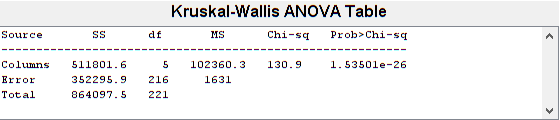
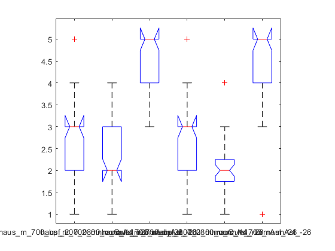
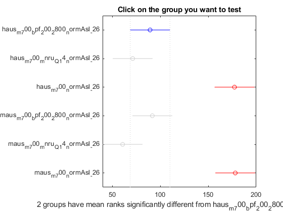
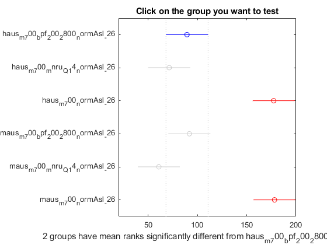

Before we start
According to the lecutre, we don't have to check for normal distribution, homogenety of variances, observation independence and outliers.
Contents
Get Data
%Extracting the relevant columns and converting it to matrix. T = readtable("..\..\speech_quality_repetition_dataset.csv", 'Delimiter',','); T = T(T.repetition == 1,:); groups = unique(T.testStimulus);
Non-parametric Test requirements:
% 1. Depended variables interval or ratio scale: Video quality is on a % scale from 1-5 % % 2. Independent variables with two or more groups: there are six % testStimuli groups % % 3. Independence of observation: see above
Test type:
We have given one independent variables devided by 6 groups / 6 testStimuli.
=> Conduct Kruskal-Wallis Test
Data transformation
participants = unique(T.subjectCode); stimuli = unique(T.testStimulus); entries = []; for i=1: length(stimuli) ratings = []; for y=1: length(participants) t_ratings = T(T.testStimulus == stimuli(i)+"" & T.subjectCode ==participants(y)+"",:).rating; entry = [stimuli(i),participants(y), t_ratings]; entries = [entries;entry]; %disp(stimuli(i) +" , " + participants(y) + " , " +t_ratings.rating'); end end tableentries = array2table(entries); tableentries.Properties.VariableNames{'entries1'} = 'testStimulus'; tableentries.Properties.VariableNames{'entries2'} = 'subjectCode'; tableentries.Properties.VariableNames{'entries3'} = 'rating'; y = []; columns = []; for i=1: length(stimuli) yy = tableentries(tableentries.testStimulus == stimuli(i)+"",:).rating; columns = [columns stimuli(i)]; y = [y yy]; end y = cell2mat(y);
Kruskal-Wallis-Test
[p,tbl,stats] = kruskalwallis(y,columns); % A p value less 0.05 would be a strong evidence that at l east one mean rating % from one of the stimuli differs from one another. Or in other words: % changing the stimuli (independent variables) have a significant effect on the rating. disp(p) if(any(p < 0.05)) fprintf("At least one mean rating from one of the stimuli differs significanlty from one another. P-value is: %d\n . Changing the stimuli (independent variable) have a significant effect on the rating." , p(p < 0.05)) else fprintf("No mean rating from one of the stimuli differs significantly from one another. P-value is: %d\n . Changing the stimuli (independent variable) have a no significant effect on the rating." , p(p >= 0.05)) end
1.5350e-26 At least one mean rating from one of the stimuli differs significanlty from one another. P-value is: 1.535010e-26 . Changing the stimuli (independent variable) have a significant effect on the rating. 
Post-hoc Test
Because we have done a balanced dataset we could use REGWQ or Tukey. But 'Bonferroni' is also possible.
Each group mean is represented by a symbol, and the interval is represented by a line extending out from the symbol. Two group means are significantly different if their intervals are disjoint; they are not significantly different if their intervals overlap.
The bars for the groups that are significantly different are red. The bars for the groups that are not significantly different are gray.
For columns (here colums are the different test stimuli):
[c,m,h,nms] = multcompare(stats,'CType','tukey-kramer');
Note: Intervals can be used for testing but are not simultaneous confidence intervals.
For columns (here colums are the different test stimuli):
[c,m,h,nms] = multcompare(stats,'CType','bonferroni');
Note: Intervals can be used for testing but are not simultaneous confidence intervals.